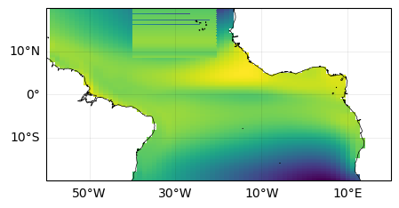

import pathlib
import numpy as np
import xarray as xr
import datetime
import pandas as pd
import copy
import matplotlib.pyplot as plt
import matplotlib.ticker as mticker
import cartopy.crs as ccrs
Plotting functions#
def plot_setup(fig, projection, lon_range, lat_range, xticks=None, yticks=None):
"""Add a subplot to the figure with the given map projection
and lon/lat range. Returns an Axes object."""
## increase resolution for projection
## (otherwise lines plotted on surface won't follow curved trajectories)
projection.threshold /= 1000
## Create subplot with given projection
ax = fig.add_subplot(projection=projection)
## Subset to given region
extent = [*lon_range, *lat_range]
ax.set_extent(extent, crs=ccrs.PlateCarree())
## draw coastlines
ax.coastlines(linewidths=0.5)
## add tick labels
if xticks is not None:
## add lon/lat labels
gl = ax.gridlines(
draw_labels=True,
linestyle="-",
alpha=0.1,
linewidth=0.5,
color="k",
zorder=1.05,
)
## specify which axes to label
gl.top_labels = False
gl.right_labels = False
## specify ticks
gl.ylocator = mticker.FixedLocator(yticks)
gl.xlocator = mticker.FixedLocator(xticks)
return ax
def plot_setup_atlantic(fig):
"""Plot Atlantic region"""
## adjust figure size
fig.set_size_inches(5, 3)
## specify map projection
proj = ccrs.PlateCarree(central_longitude=0)
## get ax object
ax = plot_setup(
fig,
proj,
lon_range=[-60, 20],
lat_range=[-20, 20],
xticks=[-50, -30, -10, 10],
yticks=[-10, 0, 10],
)
return fig, ax
(original) data loading functions#
def load_simulation(varname, member_id, simulation_type, preprocess_func=None):
"""
Load dataset for single simulation, for single variable.
Arguments:
- varname: name of variable to load, one of {"SST","PSL"}
- member_id: ID of ensemble member to load, an integer in the range [1,10]
- simulation_type: one of {"hist", "rcp85"}
- preprocess func: optional preprocessing function to apply to the simulation
Returns:
- xarray dataarray with given data
"""
## Filepath to the CESM LENS dataset
lens_fp = pathlib.Path("cmip6/data/cmip6/CMIP/NCAR/LENS")
#### 1. get filepath to data
data_fp = SERVER_FP / lens_fp / pathlib.Path(varname)
#### 2. get naming pattern for files to open
if simulation_type == "hist":
file_pattern = f"*20TRC*.{member_id:03d}.*.nc"
elif simulation_type == "rcp85":
file_pattern = f"*RCP85*.{member_id:03d}.*.nc"
else:
print("Not a valid simulation type")
#### 3. open the relevant datasets, applying preprocessing function
data = xr.open_mfdataset(
paths=data_fp.glob(file_pattern),
preprocess=preprocess_func,
chunks={"time": 60},
)
return data[varname].squeeze(drop=True)
def load_ensemble_helper(varname, simulation_type, preprocess_func=None):
"""
Load all ensemble members for given simulation type and variable.
Arguments:
- varname: name of variable to load, one of {"SST","PSL"}
- simulation_type: one of {"hist", "rcp85"}
- preprocess func: optional preprocessing function to apply to the simulation
Returns:
- xarray dataarray with given data and 'ensemble' dimension
"""
## put arguments in dictionary
kwargs = dict(
varname=varname,
simulation_type=simulation_type,
preprocess_func=preprocess_func,
)
## put results in list
data = [load_simulation(member_id=i, **kwargs) for i in np.arange(1, 11)]
## concatenate data along the "ensemble" dimension
ensemble_dim = pd.Index(np.arange(1, 11), name="member")
data = xr.concat(data, dim=ensemble_dim)
return data
def load_ensemble(varname, simulation_type, preprocess_func=None, save_fp=None):
"""
Load all ensemble members for given simulation type and variable.
(Checks if data exists locally first).
Arguments:
- varname: name of variable to load, one of {"SST","PSL"}
- simulation_type: one of {"hist", "rcp85"}
- preprocess func: optional preprocessing function to apply to the simulation
- save_fp: pathlib.Path object (save the result here if specified)
Returns:
- xarray dataarray with given data and 'ensemble' dimension
"""
## put arguments in dictionary
kwargs = dict(
varname=varname,
simulation_type=simulation_type,
preprocess_func=preprocess_func,
)
## load pre-computed data if it exists
if save_fp is not None:
## path to file
save_fp = save_fp / f"{varname}_{simulation_type}.nc"
## check if file exists:
if save_fp.is_file():
data = xr.open_dataarray(save_fp)
else:
## load the data and save to file for next time
data = load_ensemble_helper(**kwargs)
print("saving to file")
data.to_netcdf(save_fp)
else:
## don't load/save the data
data = load_ensemble_helper(**kwargs)
return data
def preprocess(data):
"""
Preprocessing steps:
1. remove data before Feb 1920
2. trim in lon/lat space
3. convert time dimension from cftime to datetime
"""
## trim in time
data_ = data.sel(time=slice("1920-02", None))
## trim in space
data_ = trim(data_)
## update time dimension
start_year = data_.time.isel(time=0).dt.year.item()
start_month = data_.time.isel(time=0).dt.month.item()
start_date = f"{start_year}-{start_month}-01"
data_["time"] = pd.date_range(start=start_date, periods=len(data_.time), freq="MS")
return data_
(some additional) data loading functions, for Atlantic#
def trim(data):
"""select part of data in given longitude/latitude range"""
## check if data is on the "T"-grid
on_Tgrid = "TLONG" in data.coords
## handle trimming for T-grid
if on_Tgrid:
## find gridcells in lon range or in lat range
in_lon_range = (data["TLONG"] >= 300) | (data["TLONG"] <= 20)
in_lat_range = (data["TLAT"] >= -20) & (data["TLAT"] <= 20)
## find cells in lon range AND in lat range
in_lonlat_range = in_lon_range & in_lat_range
## load to memory
in_lonlat_range.load()
## Retain all points with at least one valid grid cell
x_idx = in_lonlat_range.any("nlat")
y_idx = in_lonlat_range.any("nlon")
## select given points
return data.isel(nlon=x_idx, nlat=y_idx)
else:
return data.sel(lon=slice(*lon_range), lat=slice(*lat_range))
def swap_longitude_range_TLONG(data):
"""swap longitude range of xr.DataArray from [0,360) to (-180, 180].
Handles case with 2-dimension longitude coordinates ('TLONG')"""
## make copy of longitude coordinate to be modified
TLONG_new = copy.deepcopy(data.TLONG.values)
## relabel values greater than 180
exceeds_180 = TLONG_new > 180
TLONG_new[exceeds_180] = -360 + TLONG_new[exceeds_180]
## Update the coordinate on the xarray object
data["TLONG"].values = TLONG_new
## next, transpose data so that longitude is last dimension
## (we'll do all the sorting along this dimension)
data = data.transpose(..., "nlon")
## Get indices needed to sort longitude to be monotonic increasing
TLONG_sort_idx = np.argsort(data["TLONG"].values, axis=-1)
## sort the lon/lat coordindates
sort = lambda X, idx: np.take_along_axis(X.values, indices=idx, axis=-1)
data["TLONG"].values = sort(data["TLONG"], idx=TLONG_sort_idx)
data["TLAT"].values = sort(data["TLAT"], idx=TLONG_sort_idx)
#### sort the SST data
# first, check to see if data has more than two dimensions
if data.ndim > 2:
extra_dims = [i for i in range(data.ndim - 2)]
TLONG_sort_idx = np.expand_dims(TLONG_sort_idx, axis=extra_dims)
## now, do the actual sorting
data.values = sort(data, idx=TLONG_sort_idx)
return data
Filepaths#
## Path to file server
SERVER_FP = pathlib.Path("/Volumes")
## Specify folder location for saving trimmed data ("./" means current directory)
save_fp = pathlib.Path("./atlantic")
Load the data#
## Load data
data_hist = load_ensemble("SST", "hist", preprocess_func=preprocess, save_fp=save_fp)
data_rcp = load_ensemble("SST", "rcp85", preprocess_func=preprocess, save_fp=save_fp)
## Optional: load into memory (warning: may be slow!)
data_hist.load()
data_rcp.load();
/var/folders/gd/xv4t6tlj16n5774zwn6ctwkh0000gn/T/ipykernel_15147/2253713197.py:30: FutureWarning: In a future version of xarray decode_timedelta will default to False rather than None. To silence this warning, set decode_timedelta to True, False, or a 'CFTimedeltaCoder' instance.
data = xr.open_mfdataset(
/var/folders/gd/xv4t6tlj16n5774zwn6ctwkh0000gn/T/ipykernel_15147/2253713197.py:30: FutureWarning: In a future version of xarray decode_timedelta will default to False rather than None. To silence this warning, set decode_timedelta to True, False, or a 'CFTimedeltaCoder' instance.
data = xr.open_mfdataset(
/var/folders/gd/xv4t6tlj16n5774zwn6ctwkh0000gn/T/ipykernel_15147/2253713197.py:30: FutureWarning: In a future version of xarray decode_timedelta will default to False rather than None. To silence this warning, set decode_timedelta to True, False, or a 'CFTimedeltaCoder' instance.
data = xr.open_mfdataset(
/var/folders/gd/xv4t6tlj16n5774zwn6ctwkh0000gn/T/ipykernel_15147/2253713197.py:30: FutureWarning: In a future version of xarray decode_timedelta will default to False rather than None. To silence this warning, set decode_timedelta to True, False, or a 'CFTimedeltaCoder' instance.
data = xr.open_mfdataset(
/var/folders/gd/xv4t6tlj16n5774zwn6ctwkh0000gn/T/ipykernel_15147/2253713197.py:30: FutureWarning: In a future version of xarray decode_timedelta will default to False rather than None. To silence this warning, set decode_timedelta to True, False, or a 'CFTimedeltaCoder' instance.
data = xr.open_mfdataset(
/var/folders/gd/xv4t6tlj16n5774zwn6ctwkh0000gn/T/ipykernel_15147/2253713197.py:30: FutureWarning: In a future version of xarray decode_timedelta will default to False rather than None. To silence this warning, set decode_timedelta to True, False, or a 'CFTimedeltaCoder' instance.
data = xr.open_mfdataset(
/var/folders/gd/xv4t6tlj16n5774zwn6ctwkh0000gn/T/ipykernel_15147/2253713197.py:30: FutureWarning: In a future version of xarray decode_timedelta will default to False rather than None. To silence this warning, set decode_timedelta to True, False, or a 'CFTimedeltaCoder' instance.
data = xr.open_mfdataset(
/var/folders/gd/xv4t6tlj16n5774zwn6ctwkh0000gn/T/ipykernel_15147/2253713197.py:30: FutureWarning: In a future version of xarray decode_timedelta will default to False rather than None. To silence this warning, set decode_timedelta to True, False, or a 'CFTimedeltaCoder' instance.
data = xr.open_mfdataset(
/var/folders/gd/xv4t6tlj16n5774zwn6ctwkh0000gn/T/ipykernel_15147/2253713197.py:30: FutureWarning: In a future version of xarray decode_timedelta will default to False rather than None. To silence this warning, set decode_timedelta to True, False, or a 'CFTimedeltaCoder' instance.
data = xr.open_mfdataset(
/var/folders/gd/xv4t6tlj16n5774zwn6ctwkh0000gn/T/ipykernel_15147/2253713197.py:30: FutureWarning: In a future version of xarray decode_timedelta will default to False rather than None. To silence this warning, set decode_timedelta to True, False, or a 'CFTimedeltaCoder' instance.
data = xr.open_mfdataset(
saving to file
---------------------------------------------------------------------------
KeyError Traceback (most recent call last)
File ~/research/whoi-climate-tutorial_2025/envs/lib/python3.11/site-packages/xarray/backends/file_manager.py:211, in CachingFileManager._acquire_with_cache_info(self, needs_lock)
210 try:
--> 211 file = self._cache[self._key]
212 except KeyError:
File ~/research/whoi-climate-tutorial_2025/envs/lib/python3.11/site-packages/xarray/backends/lru_cache.py:56, in LRUCache.__getitem__(self, key)
55 with self._lock:
---> 56 value = self._cache[key]
57 self._cache.move_to_end(key)
KeyError: [<class 'netCDF4._netCDF4.Dataset'>, ('/Users/theo/research/whoi-climate-tutorial_2025/docs/pages/tutorial_10-10/atlantic/SST_hist.nc',), 'a', (('clobber', True), ('diskless', False), ('format', 'NETCDF4'), ('persist', False)), 'c542e4ce-a41e-44b7-a143-2f340fa836db']
During handling of the above exception, another exception occurred:
PermissionError Traceback (most recent call last)
Cell In[6], line 2
1 ## Load data
----> 2 data_hist = load_ensemble("SST", "hist", preprocess_func=preprocess, save_fp=save_fp)
3 data_rcp = load_ensemble("SST", "rcp85", preprocess_func=preprocess, save_fp=save_fp)
5 ## Optional: load into memory (warning: may be slow!)
Cell In[3], line 103, in load_ensemble(varname, simulation_type, preprocess_func, save_fp)
100 data = load_ensemble_helper(**kwargs)
102 print("saving to file")
--> 103 data.to_netcdf(save_fp)
105 else:
106
107 ## don't load/save the data
108 data = load_ensemble_helper(**kwargs)
File ~/research/whoi-climate-tutorial_2025/envs/lib/python3.11/site-packages/xarray/core/dataarray.py:4204, in DataArray.to_netcdf(self, path, mode, format, group, engine, encoding, unlimited_dims, compute, invalid_netcdf, auto_complex)
4200 else:
4201 # No problems with the name - so we're fine!
4202 dataset = self.to_dataset()
-> 4204 return to_netcdf( # type: ignore[return-value] # mypy cannot resolve the overloads:(
4205 dataset,
4206 path,
4207 mode=mode,
4208 format=format,
4209 group=group,
4210 engine=engine,
4211 encoding=encoding,
4212 unlimited_dims=unlimited_dims,
4213 compute=compute,
4214 multifile=False,
4215 invalid_netcdf=invalid_netcdf,
4216 auto_complex=auto_complex,
4217 )
File ~/research/whoi-climate-tutorial_2025/envs/lib/python3.11/site-packages/xarray/backends/api.py:1911, in to_netcdf(dataset, path_or_file, mode, format, group, engine, encoding, unlimited_dims, compute, multifile, invalid_netcdf, auto_complex)
1908 if auto_complex is not None:
1909 kwargs["auto_complex"] = auto_complex
-> 1911 store = store_open(target, mode, format, group, **kwargs)
1913 if unlimited_dims is None:
1914 unlimited_dims = dataset.encoding.get("unlimited_dims", None)
File ~/research/whoi-climate-tutorial_2025/envs/lib/python3.11/site-packages/xarray/backends/netCDF4_.py:452, in NetCDF4DataStore.open(cls, filename, mode, format, group, clobber, diskless, persist, auto_complex, lock, lock_maker, autoclose)
448 kwargs["auto_complex"] = auto_complex
449 manager = CachingFileManager(
450 netCDF4.Dataset, filename, mode=mode, kwargs=kwargs
451 )
--> 452 return cls(manager, group=group, mode=mode, lock=lock, autoclose=autoclose)
File ~/research/whoi-climate-tutorial_2025/envs/lib/python3.11/site-packages/xarray/backends/netCDF4_.py:393, in NetCDF4DataStore.__init__(self, manager, group, mode, lock, autoclose)
391 self._group = group
392 self._mode = mode
--> 393 self.format = self.ds.data_model
394 self._filename = self.ds.filepath()
395 self.is_remote = is_remote_uri(self._filename)
File ~/research/whoi-climate-tutorial_2025/envs/lib/python3.11/site-packages/xarray/backends/netCDF4_.py:461, in NetCDF4DataStore.ds(self)
459 @property
460 def ds(self):
--> 461 return self._acquire()
File ~/research/whoi-climate-tutorial_2025/envs/lib/python3.11/site-packages/xarray/backends/netCDF4_.py:455, in NetCDF4DataStore._acquire(self, needs_lock)
454 def _acquire(self, needs_lock=True):
--> 455 with self._manager.acquire_context(needs_lock) as root:
456 ds = _nc4_require_group(root, self._group, self._mode)
457 return ds
File ~/research/whoi-climate-tutorial_2025/envs/lib/python3.11/contextlib.py:137, in _GeneratorContextManager.__enter__(self)
135 del self.args, self.kwds, self.func
136 try:
--> 137 return next(self.gen)
138 except StopIteration:
139 raise RuntimeError("generator didn't yield") from None
File ~/research/whoi-climate-tutorial_2025/envs/lib/python3.11/site-packages/xarray/backends/file_manager.py:199, in CachingFileManager.acquire_context(self, needs_lock)
196 @contextlib.contextmanager
197 def acquire_context(self, needs_lock=True):
198 """Context manager for acquiring a file."""
--> 199 file, cached = self._acquire_with_cache_info(needs_lock)
200 try:
201 yield file
File ~/research/whoi-climate-tutorial_2025/envs/lib/python3.11/site-packages/xarray/backends/file_manager.py:217, in CachingFileManager._acquire_with_cache_info(self, needs_lock)
215 kwargs = kwargs.copy()
216 kwargs["mode"] = self._mode
--> 217 file = self._opener(*self._args, **kwargs)
218 if self._mode == "w":
219 # ensure file doesn't get overridden when opened again
220 self._mode = "a"
File src/netCDF4/_netCDF4.pyx:2521, in netCDF4._netCDF4.Dataset.__init__()
File src/netCDF4/_netCDF4.pyx:2158, in netCDF4._netCDF4._ensure_nc_success()
PermissionError: [Errno 13] Permission denied: '/Users/theo/research/whoi-climate-tutorial_2025/docs/pages/tutorial_10-10/atlantic/SST_hist.nc'
Plot a sample#
Try plotting on original coordinates#
fig = plt.figure(figsize=(7, 5))
fig, ax = plot_setup_atlantic(fig)
ax.pcolormesh(
data_hist["TLONG"],
data_hist["TLAT"],
data_hist.mean(["time", "member"]),
transform=ccrs.PlateCarree(),
)
plt.show()

update longitude coordinates#
data_hist = swap_longitude_range_TLONG(data_hist)
data_rcp = swap_longitude_range_TLONG(data_rcp)
Plot on updated coordinates#
fig = plt.figure(figsize=(7, 5))
fig, ax = plot_setup_atlantic(fig)
ax.pcolormesh(
data_hist["TLONG"],
data_hist["TLAT"],
data_hist.mean(["time", "member"]),
transform=ccrs.PlateCarree(),
)
<cartopy.mpl.geocollection.GeoQuadMesh at 0x14af00910>